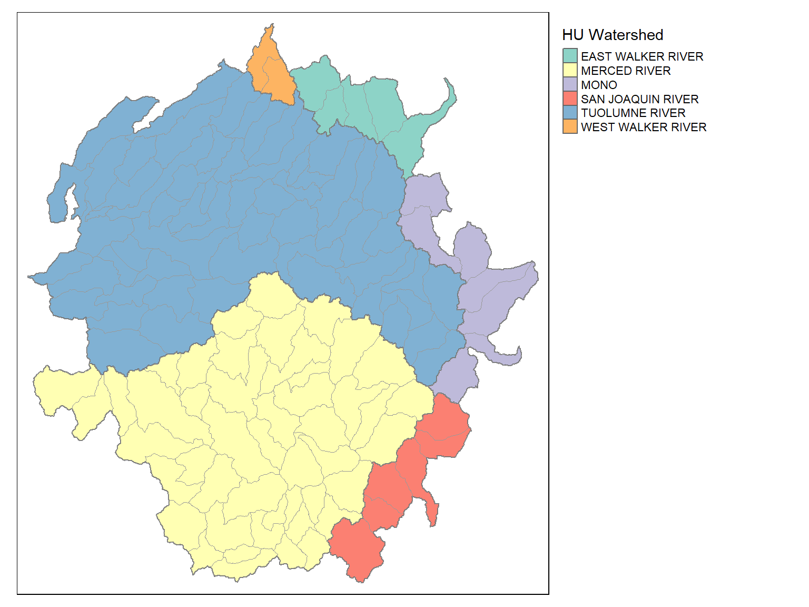
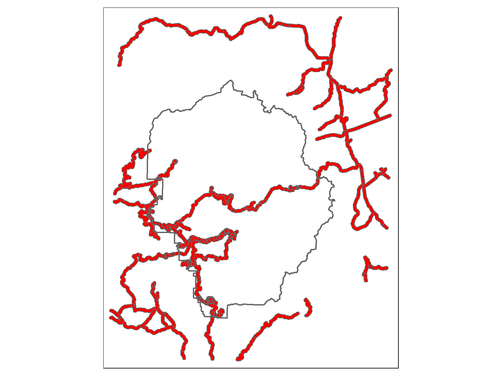
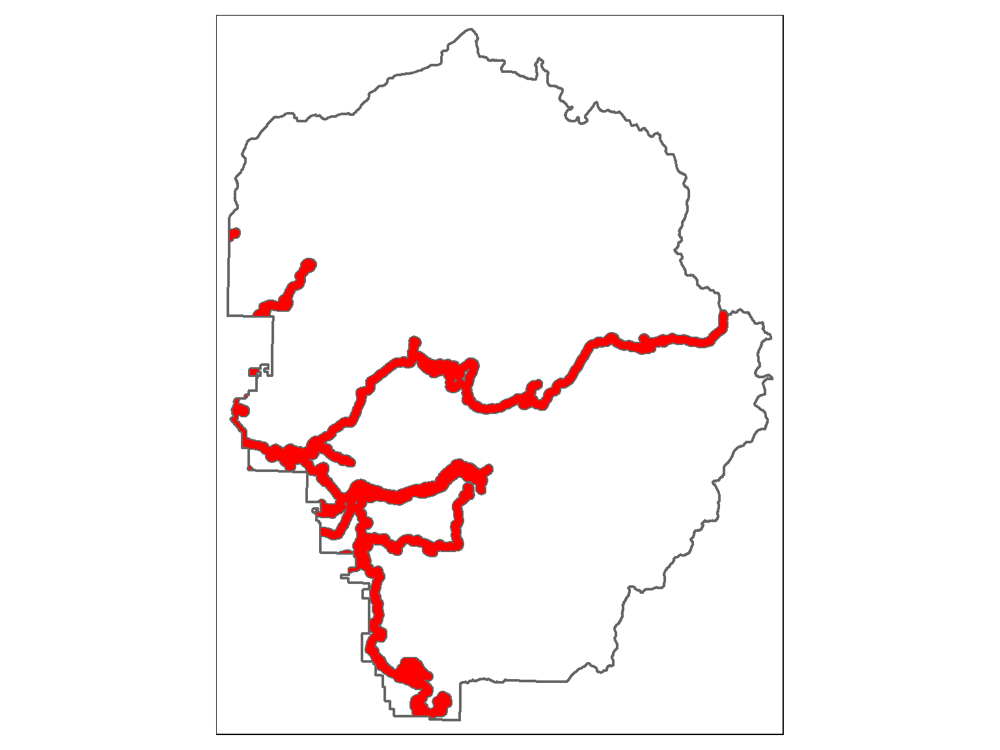
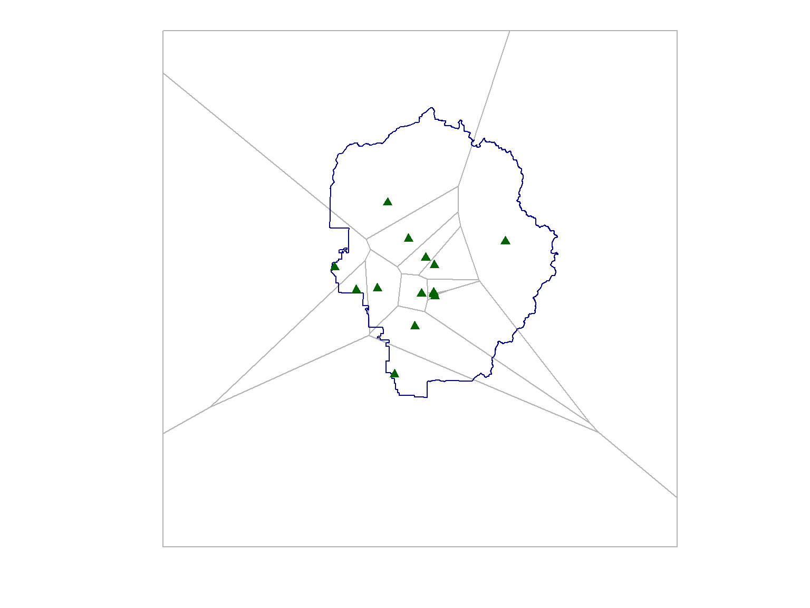

Dissolve Boundaries Based on Attribute Fields
Grouping rows based on a common value of an attribute, and then
computing one or more summary statistics for each group of rows, is
extremely common. We a regular data frame, we can use
group_by() and
summarise() from dplyr.
We illustrate this with the attribute table from watersheds layer.
This table has a column “HU” and “HUNAME” which are the id number and
name of larger watersheds.
yose_watersheds_sf <- sf::st_read("./data/yose_watersheds.gpkg", layer="calw221")
watersheds_df <- yose_watersheds_sf |> st_drop_geometry()
hu_df <- watersheds_df |>
group_by(HU) |>
summarise(HUNAME = first(HUNAME),
NUM_WATERSHEDS = n(),
AVG_ACRES = mean(ACRES))
glimpse(hu_df)
## Reading layer `calw221' from data source
## `D:\Workshops\R-Spatial\rspatial_mod\outputs\rspatial_bgs23\notebooks\data\yose_watersheds.gpkg' using driver `GPKG'
## Simple feature collection with 127 features and 12 fields
## Geometry type: POLYGON
## Dimension: XY
## Bounding box: xmin: 1383.82 ymin: -61442.93 xmax: 81596.71 ymax: 26405.66
## Projected CRS: NAD83 / California Albers
## Rows: 6
## Columns: 4
## $ HU <int> 1, 30, 31, 36, 37, 40
## $ HUNAME <chr> "MONO", "EAST WALKER RIVER", "WEST WALKER RIVER", "TUOLUMNE RIVER", "MERCED RIVER", "SAN JOAQUIN…
## $ NUM_WATERSHEDS <int> 7, 5, 2, 60, 47, 6
## $ AVG_ACRES <dbl> 9311.916, 9385.448, 6426.835, 8128.559, 8399.112, 8911.178
The exact same dplyr functions can be used with sf dataframes. The
result is another sf object where the groups of features have been
unioned together.
hu_sf <- yose_watersheds_sf |>
group_by(HU) |>
summarise(HUNAME = first(HUNAME),
NUM_WATERSHEDS = n(),
AVG_ACRES = mean(ACRES))
hu_sf
## Plot
tm_shape(hu_sf) +
tm_polygons(col="HUNAME", title="HU Watershed") +
tm_shape(yose_watersheds_sf) +
tm_borders(col="gray60", lwd=0.8) +
tm_layout(legend.outside = T)
## Simple feature collection with 6 features and 4 fields
## Geometry type: POLYGON
## Dimension: XY
## Bounding box: xmin: 1383.82 ymin: -61442.93 xmax: 81596.71 ymax: 26405.66
## Projected CRS: NAD83 / California Albers
## # A tibble: 6 × 5
## HU HUNAME NUM_WATERSHEDS AVG_ACRES geom
## <int> <chr> <int> <dbl> <POLYGON [m]>
## 1 1 MONO 7 9312. ((73660.22 -23032.77, 73681.14 -23144.08, 73731.29 -23256.44, 73785.7…
## 2 30 EAST WALKER RIVER 5 9385. ((66826.29 17825.42, 66842.88 17853.58, 66861.79 17868.39, 66915.55 1…
## 3 31 WEST WALKER RIVER 2 6427. ((41216.82 21006.26, 41275.41 20974.09, 41329.18 20937.78, 41342.79 2…
## 4 36 TUOLUMNE RIVER 60 8129. ((23207.16 -25556.28, 23146.17 -25588.36, 23112.63 -25612.56, 23054.7…
## 5 37 MERCED RIVER 47 8399. ((40429.21 -57294.51, 40357.98 -57362.66, 40260.8 -57430.64, 40091.27…
## 6 40 SAN JOAQUIN RIVER 6 8911. ((55704.49 -53548.52, 55754.08 -53648.64, 55792.94 -53706.26, 55849 -…

Geoprocessing Chains
What percentage of Yosemite falls within 500m of a road?
We first create a 500m buffer around the roads within the park
(representing a disturbance zone for sensitive species, or drive
transect detection area). Then we’ll compute the total area of the
buffered area. This task will require us to buffer,
intersect, union, and another
intersection. This is known as a geoprocessing chain. .
First, create the buffer:
## Import roads
yose_roads_utm <- sf::st_read("./data/yose_roads.gdb", "Yosemite_Roads")
## Reading layer `Yosemite_Roads' from data source
## `D:\Workshops\R-Spatial\rspatial_mod\outputs\rspatial_bgs23\notebooks\data\yose_roads.gdb' using driver `OpenFileGDB'
## Simple feature collection with 823 features and 40 fields
## Geometry type: MULTILINESTRING
## Dimension: XY
## Bounding box: xmin: 234658.1 ymin: 4139484 xmax: 324852.6 ymax: 4250252
## Projected CRS: NAD83 / UTM zone 11N
## Create the buffer
yose_roads_buff <- yose_roads_utm |> st_buffer(dist=500)
## Plot the results
tm_shape(yose_roads_buff) + tm_polygons(col="red") +
tm_shape(yose_bnd_utm) + tm_borders(lwd=2)

There are two problems here:
- the roads extend outside the park
- the buffered line segments overlap each other (so
we can’t add up the areas)
We can fix these by taking the intersection of the
road buffer with the park boundary, and unioning the
individual polygons together.
## Clip to park boundary
yose_roads_inpark_buff <- yose_roads_buff |>
st_intersection(yose_bnd_utm) |>
st_union()
## Plot the results
tm_shape(yose_bnd_utm) +
tm_borders(lwd=2) +
tm_shape(yose_roads_inpark_buff) +
tm_polygons(col="red")

What is the total area of the buffer?
road_area <- yose_roads_inpark_buff |>
st_area() |>
sum()
road_area |> set_units(ha)
## 23879.94 [ha]
How big is the buffered roads as a percentage of the total park
area?
[Solution]
road_area / (yose_bnd_utm |> st_area())
## 0.07907479 [1]
⇒ Almost 8%
Voronoi Tesselation
For a given a set of points, Voronoi tesselation computes a network
of polygons, such that each polygon contains exactly one point and
everywhere within a polygon is closest to the enclosed point.

Let’s build Voronoi polygons for the campgrounds. These polygons
could be thought of as the ‘catchment area’ of each campgrounds, if
campgrounds were like magnets trying to attract campers.
We can create a Voronoi tessellation using
st_voronoi(). Note st_voronoi()
expects a single multipart point feature, which you can create from a
point layer using st_union().
epsg_utm11n_nad83 <- 26911
## Import campgrounds
yose_campgrnds_utm <- st_read(dsn="./data", layer="yose_poi") |>
dplyr::filter(POITYPE == 'Campground') |>
dplyr::select(POINAME) |>
st_transform(epsg_utm11n_nad83)
## Reading layer `yose_poi' from data source `D:\Workshops\R-Spatial\rspatial_mod\outputs\rspatial_bgs23\notebooks\data' using driver `ESRI Shapefile'
## Simple feature collection with 2720 features and 30 fields
## Geometry type: POINT
## Dimension: XY
## Bounding box: xmin: 246416.2 ymin: 4153717 xmax: 301510.7 ymax: 4208419
## Projected CRS: NAD83 / UTM zone 11N
## Compute Voronoi polygons
v <- st_voronoi(st_union(yose_campgrnds_utm))
## Construct polygon sf and simplify (i.e., break multipart into single features)
v_sf <- st_sf(v) |> st_cast()
## Plot
plot(v_sf |> st_geometry() , col = NA, border="gray70")
plot(yose_bnd_utm |> st_geometry(), add=TRUE, col=NA, border="darkblue")
plot(yose_campgrnds_utm |> st_geometry(), col="darkgreen", cex=1, pch=17, add=T)

Modify the above so the Voronoi polygons are clipped to the park
boundary.
[Solution]
## Clip to the park boundary
v_clipped <- v_sf |> st_intersection(yose_bnd_utm)
plot(v_clipped |> st_geometry() , col = NA, border="gray70")
plot(yose_bnd_utm |> st_geometry(), add=TRUE, col=NA, border="darkblue")
plot(yose_campgrnds_utm |> st_geometry(), col="darkgreen", cex=1, pch=17, add=T)

Create Voronoi polygons for the cell tower infrastructure